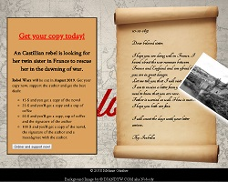

Melanie Günther
Hi, my name is Melanie Günther. I’d like to tell you my story how I went from my first steps in the World Wide Web to developing websites (and apps). When I was a child I liked spending time on computer games and websites. Whilst at school my interest in media and IT increased and I choose IT as elective subject and Fine Arts and Mathematics as advanced courses. In my free time I edited wallpapers and photographs using Photoshop and dreamt of becoming a game developer. In summer 2009 after my a levels I took my chance to develop my very first website teaching myself HTML and CSS with SelfHTML and started my training as IT Specialist at the end of summer. How life goes I did a lot of things between now and then. Along the way I collected many experiences in different fields, but I still was curious about the functional principles of websites, apps and games.
On this webpage you can see selected works of my personal evolution of being a programmer. I am still learning more and more every day and am enthusiastic about new projects, ideas and challenges.
You can contact me by using e-mail.
-

Landing Page
HTML5, CSS3: A landing page of the novel Rebel Wars
-
Responsive Design
HTML5, CSS3, JavaScript: An example of Responsive Design with a video and table
-

Form with JavaScript
HTML5, CSS3, JavaScript: Fill a from automatically with JavaScript.
-

VBA to improve workflow
Excel, VB: Form to read data from an Excel table and auto fill the data into an e-mail to be send.